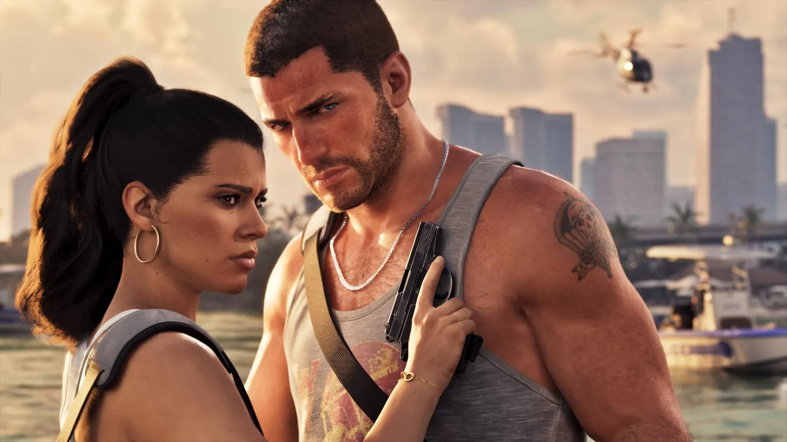

Оценки GTA 6: 99 на Metacritic — самая высокая оценка в истории
Опубликовано: · Обновлено:

- 18 ноября, в день снятия эмбарго, у GTA 6 — 99/100 на Metacritic и 98/100 на OpenCritic. По данным Bloomberg, это лучший результат среди всех игр на обоих агрегаторах.
- 10 из 10 поставили IGN, GameSpot, Game Informer, Push Square, Forbes и VGC; 5 из 5 — Eurogamer, GamesRadar+ и The Guardian.
- На Metacritic 99 и у The Legend of Zelda: Ocarina of Time (1998) — теперь у GTA 6 столько же.
- Акции Take-Two в день обзоров выросли на 6% (Forbes).
Итог: 99 и 98
Обзоры GTA 6 вышли 18 ноября 2026 года — за день до релиза и одновременно с запуском игры в Новой Зеландии, где 19 ноября наступает раньше всех. Через несколько часов картина сложилась: по данным Bloomberg, у игры 99 из 100 на Metacritic и 98 из 100 на OpenCritic, это высший балл среди всех игр на обоих сайтах. Число рецензий росло весь день: Forbes на старте насчитал 114, Forbes Australia — уже 147.
| Агрегатор | Оценка | Платформа |
|---|---|---|
| Metacritic | 99 / 100 | PS5 |
| OpenCritic | 98 / 100 | все |
| Оценка пользователей Metacritic | — | до релиза сайт закрыл приём оценок |
Оценки изданий
| Издание | Оценка |
|---|---|
| IGN | 10 / 10 |
| GameSpot | 10 / 10 |
| Game Informer | 10 / 10 |
| Push Square | 10 / 10 |
| Forbes | 10 / 10 |
| DualShockers | 10 / 10 |
| TechRadar | 10 / 10 |
| VGC | 5 / 5 |
| Eurogamer | 5 / 5 |
| GamesRadar+ | 5 / 5 |
| The Guardian | 5 / 5 |
| Digital Spy | 5 / 5 |
| Creative Bloq | 5 / 5 |
| Empire | 5 / 5 |
| TheSixthAxis | 9 / 10 |
| Kotaku, The Verge | без оценки |
Обзор IGN написал Люк Рейли, он назвал GTA 6 «самой впечатляющей игрой, в которую когда-либо играл». Тамур Хуссейн из GameSpot считает, что игра собрала всё, чего Rockstar добилась в открытых мирах, и что превзойти её сможет разве что GTA 7.
Что хвалят критики
- Леонида живая. Детализация мира и поведение жителей — главная тема почти всех рецензий.
- Свобода в заданиях. Миссии можно решать по-разному: тихо, громко, с напарником или в одиночку.
- Джейсон и Лусия. История пары — криминальный подъём, любовная история и сатира одновременно; GameSpot сравнивает её с лучшими криминальными историями кино и сериалов.
- Техника. Digital Foundry отдельно разобрала графику, физику и трассировку лучей; при этом игра идёт в 30 FPS на всех консолях.
Технические подробности — в статье GTA 6 и 30 FPS: что подтвердила Rockstar. На Xbox Series S игра рендерится в 720p и масштабируется до 1080p; на PS5, Series X и PS5 Pro — от 1440p до 4K.
Сравнение с прошлыми GTA
| Игра | Metacritic |
|---|---|
| GTA 3 | 97 |
| GTA 4 | 98 |
| GTA 5 | 97 |
| Red Dead Redemption 2 | 97 |
| GTA 6 | 99 |
До GTA 6 лучшим результатом серии была GTA 4 — 98 баллов на Xbox 360. Оценки прошлых частей — по платформе с наибольшим числом рецензий.
Оценки игроков
Пользовательских оценок на старте почти нет: за несколько дней до релиза Metacritic удалил фальшивые отзывы и временно закрыл приём оценок. Оценки в PlayStation Store до релиза — тоже не показатель: проверить, играл ли автор, невозможно. Metacritic обычно открывает оценки игроков не раньше чем через 36 часов после выхода, чтобы отсечь тех, кто не играл. Ранние пользовательские цифры поэтому мало что значат.
- GTA 6 получила 8 номинаций на The Game Awards 2026, включая «Игру года».
- У The Legend of Zelda: Ocarina of Time тоже 99 на Metacritic, но рецензий у неё в несколько раз меньше — тогда игр оценивали меньше изданий.
Награды и рекорды
99 на Metacritic — рекорд, который GTA 6 делит с The Legend of Zelda: Ocarina of Time (1998). У прошлых игр Rockstar: GTA 4 — 98, GTA 5 и Red Dead Redemption 2 — по 97. На OpenCritic у GTA 6 средняя 98, и все 100% критиков её рекомендуют.
За два дня до выхода GTA 6 получила 8 номинаций на The Game Awards 2026 — больше всех в этом году; церемония пройдёт 10 декабря. А 20 ноября пришли первые цифры продаж: $3,79 млрд за первый день (подробно — Дата выхода GTA 6: игра вышла 19 ноября 2026 — время по Москве, платформы, хроника).
Частые вопросы
Какая оценка у GTA 6 на Metacritic?
99 из 100 (PS5) — по данным Bloomberg на 18 ноября 2026 года. На OpenCritic — 98.
Сколько поставил IGN?
10 из 10. Обзор написал Люк Рейли.
GTA 6 — лучшая игра по оценкам?
По данным Bloomberg — да: это высший балл среди всех игр на Metacritic и OpenCritic. 99 на Metacritic есть ещё у Ocarina of Time.
Источники: Bloomberg, «Grand Theft Auto VI Becomes the Best-Reviewed Video Game Ever», 18.11.2026; Forbes, 18.11.2026; Forbes Australia, 19.11.2026; Tom’s Guide, «GTA 6 review roundup live», 18.11.2026; MovieWeb, 18.11.2026; GameSpot, 19.11.2026; games.gg (оценки прошлых GTA); VGTimes (The Game Awards, Metacritic, Series S), 17–18.11.2026.
Каждый день — новости, фишки и секреты GTA 6 за 30 секунд. Подписывайтесь:
YouTubeInstagramTikTok